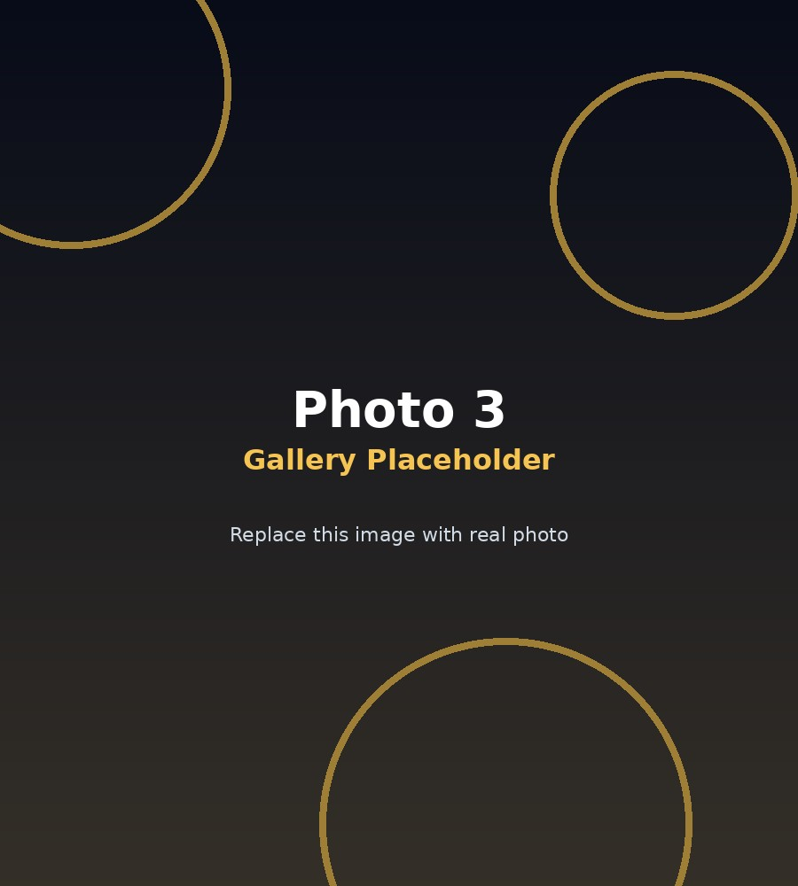

01
NFC Business Identity
Premium PVC, metal and wooden NFC business cards that let users share their details in one tap without repeating the same information again and again.
Founder of Vasuki NFC, building smart NFC business cards, digital profiles, review tools and practical branding solutions that help businesses tap, connect and grow faster.
Hemshankar Agarwal leads Vasuki NFC with a straightforward goal: make business identity faster, smarter and more premium through NFC and digital-first products that actually solve real customer interaction problems.
Instead of selling disposable, forgettable print material, the focus is on building better ways for businesses to share contact details, websites, social links, review pages and menus. Vasuki NFC works at the intersection of physical products and digital experiences — where one tap or one scan should do the job cleanly.
The portfolio style follows the uploaded 3D concept, but the content is not filler. These are the actual Vasuki NFC business categories that matter.
Premium PVC, metal and wooden NFC business cards that let users share their details in one tap without repeating the same information again and again.
Editable digital visiting cards and smart profile pages that keep business details current even when the printed card stays the same.
Google review cards and review stands made to reduce friction between a happy customer and an actual review.
Restaurant QR menus, branded QR utilities and smart customer-access products for different business types.
No fluff. This is the practical sequence behind the business and product direction.
The founder role is not just "owner" text on a page. It means identifying actual customer pain points, packaging them into simple products, and then improving the whole flow from enquiry to usage.
These blocks replace the fake portfolio project filler with actual Vasuki NFC offerings.
High-impact contactless business cards that combine physical premium feel with a live digital identity behind them.
Designed for counters, stores and reception desks where customers are most likely to take quick action.
A flexible profile setup for professionals and business owners who want control over their public business identity.
Business-specific QR and branding products tailored for restaurants, shops and custom promotional use.
Existing founder images are preserved and displayed inside the new 3D-style portfolio structure.

If someone lands here, they should be able to contact the founder immediately. No dead links, no dummy blocks.
That is the whole point of the business. Premium identity outside, practical conversion inside.